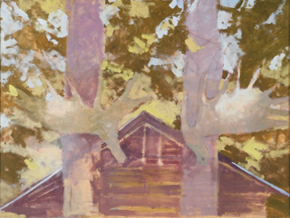
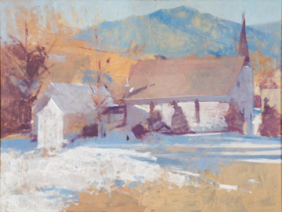
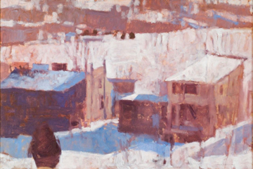
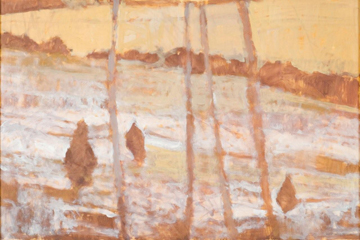
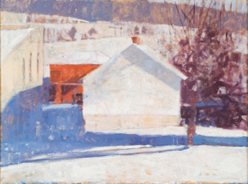
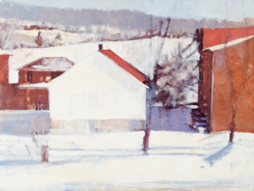

|
> Artists > Annie Harris Massie > Images 6
Annie Harris Massie

Images | Images 2 | Images 3 | Images 4 | Images 5 | Images 6
Images 7 | Images 8 | Info

Moose Antlers on Two Fir Trees, New Brunswick, 2007.
Oil on canvas, 36 x 48".

Grace Episcopal Church on the Tye River, Nelson County, 2007.
Oil on canvas 36 x 48".

Brownsburg, Late Afternoon, 2008.
Oil on panel, 24 x 36".

Snow Melting Below the Red Hill, Lone Jack Farm, 2008.
Oil on panel, 24 x 36".

First Day after the Snow, Brownsburg, 2008.
Oil on canvas, 30 x 40".

Third Day after the Snow, Brownsburg, 2008.
Oil on canvas, 30 x 40".
Images | Images 2 | Images 3 | Images 4 | Images 5 | Images 6
Images 7 | Images 8 | Info
|